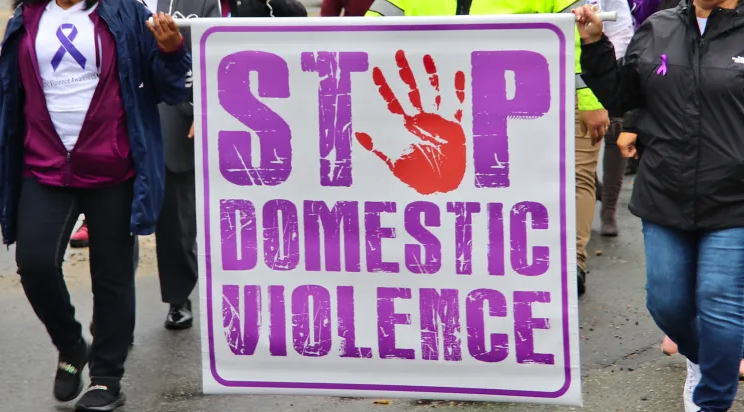

Love is based on respect, kindness, and trust. It should never involve violence or abuse.

Domestic Violence
Domestic abuse is a pattern of behavior where one person in a relationship seeks to control and harm the other, often through physical, emotional, sexual, or financial means. It can have severe and lasting effects on the victim's well-being. Domestic violence can be avoided by educating yourself and others about the risks and signs of abuse.